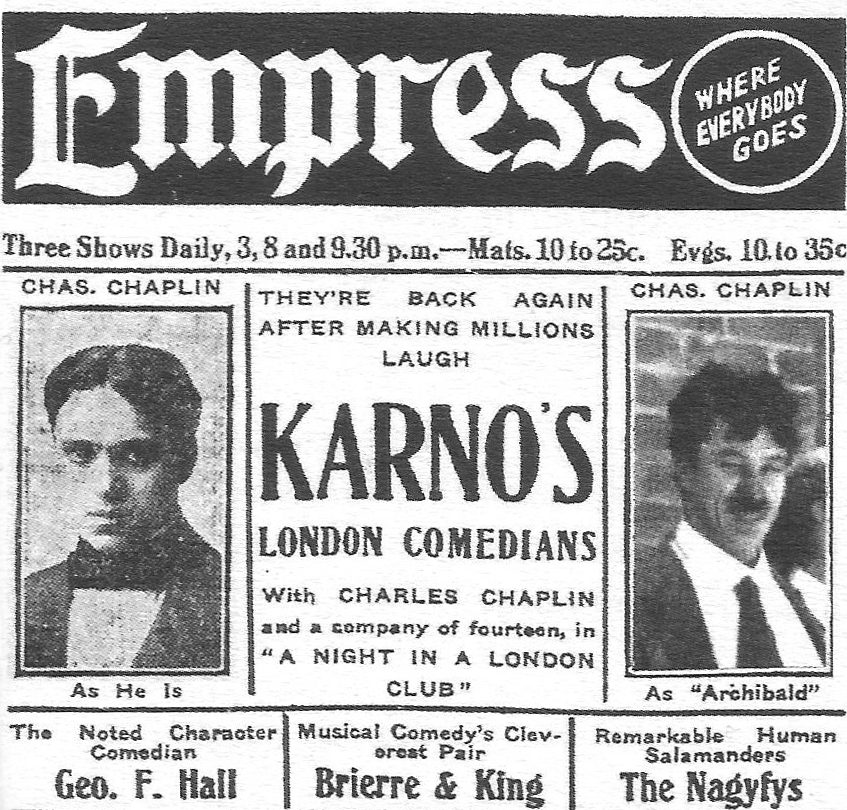

too Freudian
… No—too Freudian. Finally after a pause …
译本：「不——太弗洛伊德了」
不行，太像弗洛伊德说的那一套了
弗洛伊德派爱把蛇读成性的象征。学生脑子里冒出一条盘着的大蛇，马上想到别人会怎么解读，于是换掉。审查他的不是别人，是他想象中别人的眼光。
这两节是这一篇从理论走到课堂的地方。§4 是一串课堂速记：作者叫学生说个词、从架子上拿样东西，一次次当场抓到他们把第一个念头换掉。§5 从一个人的脑子走到两个人之间：同一句「你叫史密斯吗」，答法不同，戏就死或活；接着是潜水员、牙医、木腿和一头差点被阉的大象。读的时候抓两件事：作者说的 block 到底指什么，以及它为什么不等于说「不」。
上一页（§1–§3）讲人为什么把第一个念头审掉：怕显得疯、下流、不原创。这一页先在课堂上当场抓这道审查（§4），再把它推到两个人之间（§5）：一个人审自己的念头，两个人就审对方的提议。§5 立起的提议、接受、拒绝三个词，下一页的六个游戏全建在它上面。
§5 最后一段，作者把接受和拒绝推到台下：生活无聊的人，多少是自己挡出来的。这一句只有一段和学生的对话撑着，读的时候记住他说的是「或多或少」，本站的看法在页末。
两个人即兴演一场戏，什么样的一句话会让戏演不下去？
读的时候带着这几个问题。不用先找答案，读完回来对照「检查一下理解」。
§4 几乎没有议论，是七八段课堂速记连在一起：盒子、说个词、海星的反义词、架子上的沙丁鱼、P 开头的三个词，每一段都是作者当场抓到一次换词。后半转到无实物拿东西，最后一段录像记下的连环追问，末尾一句点出他在不断换问题的类别。§5 开头一句话分出爱说「是」和爱说「不」的人，然后是三遍史密斯，中间插进卡诺和地位。「“安排”别人」一小节像是离题，讲的是谁带戏。「拒绝与接受」才是主体：他先下判断（拒绝是攻击），再一场场复盘学生的戏，定义要到阉大象那场之后才出现，读的时候别以为漏看了。最后是按类别给提议、心有灵犀，落到生活。
作者落在哪：演员做的任何事都是提议；拒绝是挡住行动、抹掉对方前提的那一下，跟嘴上说不说「不」、口气凶不凶无关。学生多半爱拒绝，好的即兴演员接住一切，看上去像有心灵感应。
这一页是原书和译本「自发性」一篇的第 4、5 节。粗体是本站给的节名，下面是译本的节号和小标题、这一节在译本电子书中开头的几个字（搜它就能跳过去），再下面是英文原文的开头。每节标了档：「先读」是这本书最精彩、不读就错过的，「有空」好看但跳过不丢线。读完打个勾。
先把这一页用到、作者默认你懂的几个概念讲一遍。讲的是概念本身，作者拿它推出什么，读原书时自己看。
这两个词不是作者造的。他在注 3 说出自 1960 年的一篇问卷研究：有人答问卷不管题目是什么都倾向答「同意」，有人都倾向答「不同意」。心理测量里管前一种叫默认答是（acquiescence），一般当作要设法抵消的作答偏差。作者借来的是它的日常意思：遇事先说「好」的人，和先说「不」的人。
它说的是习惯的第一反应，不是人品：先说「不」的人未必刻薄，作者说他们换来的是安全；先说「好」的人换来的是经历。
在这一页：§5 第一段：作者说爱说「不」的人比爱说「是」的人多得多，但一种人可以训练得像另一种。
日常说「提议」，指嘴上的建议。作者的用法宽得多：台上演员做的任何事，一句台词、一个手势、打个哈欠、碰巧比对方高半个头，都算向搭档递过去的一样东西，对方可以接，也可以不接。这是作者的行话，后来成了即兴界的通用词。
换成日常的例子：同事在群里说一句「这个接口好像又超时了」，这就是一个提议。有人回「我来看看日志」，有人回「我这边没问题啊」，接下来发生的事完全不同。
在这一页：§5「拒绝与接受」过半才下定义；在那之前的每一场戏，都可以回头数一数谁递了什么。
作者给 block 的定义只有一句：挡住行动、不让它发展，或者抹掉对方给的前提。看的是戏还走不走得下去，不看嘴上说不说「不」、口气客不客气。被问「你是不是老王」，答「是又怎么样」很冲，但认了，戏能往下走，不算拒绝；答「不是」，前提没了，是拒绝。一个「不」字不说也可以拒绝：对方喊房子着火了，你说「今天天气真好」。
中文「拒绝」最容易让人想成「说不」。本站写「拒绝（block）」，读到时想成「挡掉」。
在这一页：§5 先拿裤子、截肢、大象几场戏演示拒绝怎样让戏死掉，再下定义；定义后紧跟两个「凶但不算」的例子。
接受就是把对方递过来的当真，并让它影响你接下来做什么。作者 accept 和 yield（让步、顺从）混着用。最省事的接受是照着做：对方打哈欠，你也打一个。更好的是接住再添一点，后来的即兴界管这叫「Yes, and」；书里没有把它当口号，只在下一页顺口提到一个叫这个名字的游戏。
接受不等于同意对方的观点：角色之间可以吵得很凶，演员之间照样在合作。也不等于被动：接住一个让自己难堪的处境，往往比挡掉它更要胆量。
在这一页：§5 每场复盘作者都在标哪一句接住了；「是又怎样」「不，先生！」两例说明凶的话也可以是接受。
先猜：A 问「你就是天天半夜弹钢琴的那位吧？」，你回「是又怎么样？我交了物业费，几点弹是我的自由！」，这算接住还是挡掉？回一句客客气气的「您好您好，吃了吗？今天天气真不错。」呢？到下面的模拟器里各点一次验证。
你演 B，A 来敲你的门。A 每说一句，你从四种接法里选一种：接住再添一点、顶回去、否认、岔开话题。点了以后才告诉你这一句算接受还是拒绝。台词和场景都是本站编的。先一路选「否认」试试。
需要浏览器打开脚本才能运行。
图例：上面一行绿框是已经成立、两个人都认了的事；下面一行划掉的，是被挡掉的提议。下面四个数依次是：已经成立的事有几条；被挡掉的提议有几条；A 还有多少兴致（满分 5，你接住加 1，挡掉减 2，到 0 他就不演了）；观众还有多想看下去（满分 10，接住加 1；挡掉的那一下观众会笑，加 1，但下一步先减 3）。
这个模拟器只演一件事：一句话算接受还是拒绝，以及拒绝攒多了戏会怎样。台词好不好笑、两个人只守类别也能「自己长出」一场黑帮戏，它都演不了；兴致和观众的涨跌是本站定的规则，用来对照书里的说法，不是测量。
作者在课上用过、照着就能玩的；个别几张是本站照书里的段落改的，卡里写明了来历。几个人、怎么玩、看什么写在卡片上；「先猜」那一栏是书里的课堂上发生了什么，先自己猜，或者先玩一次，再点开。全书的游戏卡汇总在游戏汇总。
译本：「说个词」
一个学生嘴型先做出 O，说出口的却是 cabbage，承认第一个是 orange，换掉是因为白菜显得更普通。一个女孩换掉了 pea、pink、pebble，作者猜前两个是怕联想到小便和肉体，她自己说第三个是不想连说三个 P 开头的词。作者说，不马上问，她会否认自己换过。
换掉的词常和身体、排泄、性有关，书里就有例子。找彼此放得开的人玩；作者也让学生笑着说一句「这个我不说」，不必硬说出口。
译本：「把你的手放进一个想象中的盒子里」
作者说，要人一样接一样地拿，人多半就懒得先想了，只是饶有兴致地看手拿到什么。他记下的那段录像里，学生从板球一路拿到龙虾、灰尘、一颗尝起来像糖的珍珠，伸手到身后时笑了出来。作者点明：他一直在换问题的类别。
手自己挑的东西常常不体面，作者自己举的例子是用过的避孕套和冒着热气的马粪，他说观众反倒高兴。和不熟的人玩，先说好。
译本：「你的名字是史密斯？」
书里答「不」的那一遍，问的人心里的设想被一样样拆掉，泄了气，作者说两个演员完全处在冲突里。答「是」的那一遍，问的人第二句就问他是不是和自己老婆有染，第三句已经动手了。顶嘴的那一遍他说也是接受：演高的人照样可以顺着别人的创造走。
译本：「A给出无聊的提议，而B给出有趣的提议」
书里那一对自然演成了一场黑帮戏：越狱的老同伙找上门，另一个人支支吾吾地说起分钱、说自己不是有意出卖他。作者说，两人只在意自己的话属于哪一类，场景自己照顾自己；两人交替提议和接受，场景会自己生出来。
按在书里出现的顺序排，标题前是节号。只讲到读懂这一页需要的程度。

作者说卡诺面试演员时，拿笔往空墨水瓶里一戳，假装朝人甩墨水：对方装作被溅到眼睛，他就录用；一脸茫然的，不要。同一节后面作者举的「不想被奶油派砸脸」，正是卡诺那一行的看家把戏。
这个练习是他的：一个演员负责整场戏往哪走，另一个只当助手。work someone 是行话，大意是带着对方演、让对方替你把戏做出来。作者说最高明的玩法是观众看不出谁在带：牙医那场，观众会以为是牙医在掌控，其实开头斜坐、张嘴的病人才是带戏的那个。
satori 是日语的「悟」，禅宗里一下子看透本性的体验，作者顺手借来这个词。他说的是：学生在他课上待得够久，有一天会突然明白，自己用来对付别人的那些武器，也一直在暗地里对付自己。这一句是 §5 前半的落点；下一页 §7 收尾的三道坎，第一道也是认识到我们在和自己的想象较劲。
作者说的就是这档节目：一个参赛者吓僵了，Groucho 抓起他的手腕号脉，说要么这人死了，要么我的表停了。参赛者什么也没打算给，Groucho 把「僵住」当成提议接住了。同一段里斯坦尼斯拉夫斯基（见姿态第 1 页）骂一个椅子塌了就停下的演员：该接着演，还该向角色所在的主人家道歉。两件事是一个道理。
作者在注 3 引的是 Arthur Couch 和 Kenneth Keniston（1930–2020，美国社会心理学家，后来在麻省理工学院任教）1960 年发表的论文《唱正调者与唱反调者》，载《变态与社会心理学杂志》60 卷 2 期（书里把 Keniston 拼成 Kenison，卷号印成 160）。他们研究的是答问卷时不论题目都爱答「同意」的倾向，并把它当成一种人格。注里那一大段「本我主导」「次级过程」的弗洛伊德式描写，是他们的话，不是作者的。
注 5 引的「日本文献」是《役者论语》（Yakusha Rongo），江户时代歌舞伎名角艺谈的合集，收的多是十七世纪到十八世纪初几位演员的话，一般记为 1776 年刊行。1969 年 Charles J. Dunn 和鸟越文藏把它译成英文，作者引的是这个英译本。译本：「《演员文集》」就是这本书，译者名「本佐·托利戈耶」是鸟越文藏的音译。
读译本时值得翻一下原文的地方：双关、行话、口语，和译本传不出的语气。灰色斜体是原文里的一小段，在英文电子书里搜它就能找到；方框里是译本这一句的译法。译错的放在下一节「译本勘误」。
对着译本读这两节时，下面这些地方会把人读歪。方框里是译本的原句，在译本电子书里搜它就能找到；灰色斜体是英文原文那一处。只收意思错了、反了、漏了的，措辞上的出入不收。全书的勘误汇总在译本勘误。
… he’d seem good-natured and witty …
译本：「他是个和善而风趣的学生」
原文是假设：要是他真说出盒子里装着死去的泰德叔叔，大家会笑，他会显得和善又风趣，可他怕被当成疯子或冷血。译本写成他本来就是个和善风趣的学生，丢了这里的论点：第一个念头说出来，效果反而好。
… or whatever, he’d engage them …
译本：「他就会和他们进一步接触」
engage 在这里是雇用。对方装作被墨水溅到眼睛，卡诺就录用；一脸茫然的，他就不要。译本「进一步接触」读来像还要再考察，这个测验一锤定音的意思没了。
… I don’t consider them indecent …
译本：「我不认为我做过什么下流的事！」
them 指对方说的那些「暗示」：他承认说过，只是不认为下流，前提照单全收，两人才能接着吵。译本变成「我没做过下流的事」，像在否认，正好成了作者说的拒绝。
… it’s important that we don’t exploit …
译本：「重要的是我们不能鼓励演员去制造冲突」
原文 actors’ 是斜体：别去利用演员本人之间的较劲。角色之间吵得再凶都行，下一句就说，看似激烈的争执里演员也该合作。译本写成「不能鼓励演员制造冲突」，和下一句对不上。
… A block is anything that prevents …
译本：「“拒绝”是指阻止动作发展」
译本把 block 译作「拒绝」，前后一致，但中文的「拒绝」最容易想成「说不」，而作者紧接着的两个例子，一个口气很凶，一个嘴上就说「不」，都不算 block。the action 指戏往前走，不是身体动作。读到「拒绝」就想成「挡掉」，读到「动作」就想成「情节」。
… the actors don’t take it personally …
译本：「演员们就不会认为自己是在攻击」
take it personally 是「当成冲着自己来的」：命令是老师下的，被挡的人不觉得对方在跟自己过不去，士气才不垮。作者正是由此推出拒绝带攻击性。译本写成拒绝的人不觉得自己在攻击，主语换了。
… it’s a step up in the world …
译本：「是啊，这个世界进步了。」
a step up in the world 是「比从前混得好了」：越狱回来的 A 看着重新装修的地方，顺口说了一句。B 下一句就说今非昔比、不是有意出卖他，接的正是这层。译本「这个世界进步了」像一句没头没脑的感慨。
… I was in the first form …
译本：「我是头几名，你吊车尾。」
first form 是刚进中学的一年级，school leavers 是快毕业的高年级。说的是年龄：他当年是小不点，对方是大孩子，下文午饭时挨打、被抓着脚吊出窗外才接得上。译本写成了成绩排名。
… assume that one has already been …
译本：「而是假设你已经给出了提议」
one 指一个提议：作者要演员别去想提议，而是假定对方已经给了一个，你去接住。紧跟着的格劳乔号脉、「我不是不许你比我高吗」都是这样，把对方的僵住、个头当成提议。译本写成假定你自己已经给过了。
… their lives are dull by chance …
译本：「常常认为自己的生活只是偶尔无趣」
by chance 是「碰巧、运气使然」：生活无聊的人以为是命不好，作者说其实多少是自己挡和接出来的。译本「只是偶尔无趣」意思走偏，这一节落到生活的那一下就接不上了。
… gags or blocks at his peril …
译本：「在面对重大抉择时去插科打诨」
at his peril 是「后果自负、要冒风险」。原意：即兴演员要演很长时间，所以抖包袱、拒绝都很危险，可观众当场的笑声偏偏会训练他这么做。译本多出「面对重大抉择」，又丢了「危险」，读不出作者的警告。
A block is anything that prevents the action from developing, or that wipes out your partner’s premise.— §5。本站译：拒绝，是任何挡住行动、不让它发展，或者抹掉搭档给出的前提的东西。
定义下得很窄，口气也很冷静：两个「或」，一个看行动，一个看前提，都不看口气。紧跟着一句「它要是让行动发展了，就不是拒绝」把门关死。中文读者容易被「拒绝」两个字带偏（见上面的勘误），这一句值得对着原文看一遍。
In life, most of us are highly skilled at suppressing action.— §5。本站译：在生活里，我们大多数人都是压住行动的高手。
口气是揶揄，highly skilled 是反着夸：压住行动居然是一门本事。前后文是一个翻转：生活里我们不想挨奶油派、不想看见奶奶的轮椅冲向悬崖，到了剧场却花钱看这些事发生。作者说即兴老师只要把这门本事倒过来。most of us 是「大多数人」，不是所有人。
读完这一页的两节再看。下面是作者在这两节里的主张，由本站按主张重新组织，不按原书的顺序；每条后面是节号，拿不准就回书里那一节再读一遍。
他在课上一个个当场抓：嘴型、停顿、手先伸向又缩回的东西都会露馅。被追问时，学生说得出换掉的是什么、为什么换：想显得普通、想显得原创、怕不雅。他的解释是这些答案进不了长期记忆，不马上问，本人会否认。他说教那个女孩接受第一个念头，她会显得有创造力得多。
§4无实物拿东西，可以先想好再拿，也可以让手自己去抓；他说怕失败的人只能先想，肯玩的人才让手做主。手抓到的常常不体面，观众却高兴。让人一样接一样地拿，人多半就懒得先想了；连环追问时他不断换类别，帮对方一路想下去。
§4对方要么接受，要么拒绝。拒绝是挡住行动、抹掉对方前提的那一下；凶狠的「是又怎样」、仆人的「不，先生！」都接住了前提，不算。反过来，被要求放手时回一句「好吧，随你」，他说大概算拒绝，能逗笑，但会伤感情。
§5他说起初学生看不出自己在拒绝，有些人爱接受，多数爱拒绝。他复盘的理由：不想演脱裤子的尴尬、不想卷进下流或疯狂的戏、想拖到有个「好」点子；演高地位的人怕在观众面前丢脸。他还推断拒绝是一种攻击：演「我爱你」时学生几乎总在接受，由他下令互相拒绝时，士气不那么容易垮。
§5好的即兴演员接受所有提议，连对方无心的出汗、打哈欠、个头也接，所以一切像排练过，意外也打断不了他们。两人交替提议和接受，场景会自己生出来。他把这推到台下：每个人都或多或少靠自己挡和接的习惯，选了会碰上什么事。
§5合起来：作者把「没想象力」从一个人的毛病改写成两个人之间的事：你挡掉的不只是自己的念头，还有搭档的。学会认出拒绝、改成接住，是这一篇从理论走到台上的那一步。
这本书 1979 年出版。下面挑出这一页里能被后来的研究检验的说法，分「书里 / 当时 / 今天」三栏，并给一个结论。结论判的是标题里「书里的说法：」后面那一句。全书的这一节汇总在今天怎么看。
读完作者的主张，再看它站不站得住。每一块摆出三样：主流怎么看，作者怎么看，本站的评论。最后一句是本站对这一页的总体判断。
主流看法：会话分析发现，日常对话里有一种「偏好同意」的规矩：同意通常来得快、直截了当，不同意和回绝往往要先停顿、绕弯、给理由（Pomerantz 1984；Sacks 1987）。也就是说，人们普遍感觉得到，挡掉别人是有代价的，所以才要包装。
作者的看法：拒绝是一种攻击：演「我爱你」的戏，学生几乎总在接受；由他下令互相拒绝，演员不当成冲着自己来的，士气不那么容易垮。§5
本站的评论：两条观察都有意思，也都有别的解释：「我爱你」本身就是一条要人亲近的指令，接受多，可能是指令的功劳。作者自己在同一节里还给了另一个理由：怕。演高地位的人怕丢脸，害怕的即兴演员信奉「拿不准就说不」，学生挡掉阉大象是不想卷进下流的戏。说拒绝多半是自保，比说它是攻击更贴他自己的例子；对被挡的那一方来说，感受上倒确实像挨了一下。
主流看法：人格心理学里，Buss 1987 年概括了人和环境互相塑造的三条路：人会挑去哪些场合、避开哪些（选择），会引出别人特定的反应（唤起），也会动手改变处境（操纵）。人不只是环境的被动承受者，这是共识；处境里有多少是自己选的，因人因事差别很大。
作者的看法：生活无聊的人常以为是运气不好，其实每个人都或多或少靠自己挡和接的习惯，选了会碰上什么事。§5
本站的评论：「或多或少」要留住。在台上，接住一切是好策略；在台下，作者在这一节开头自己就说了，说「不」的人换来的是安全：陌生人的推销、来路不明的合同，挡掉才对。他回学生那句「你躲开那种人了吗」很漂亮，可对没法躲的人（孩子、病人、离不开那份工作的人）就不太公平。当一个提醒最好：觉得日子乏味时，看看自己最近挡掉了多少邀请。
本站的总体看法：这一页最值得带走的是那条窄定义：拒绝看的是戏还能不能往前走，不看嘴上说什么，拿它复盘任何一场对话都好用。§4 当场抓换词的速记，好看又好试。说拒绝是攻击、生活是自己挡出来的，是从课堂推出去的漂亮说法，带着「多半」「或多或少」去读。
先在心里答，再点开。答错的那题，回书里把对应那一节再读一遍。
他看见学生的嘴先做出了 O 形。学生承认第一个是 orange，换成 cabbage 是因为白菜显得更普通。作者说这个学生想显得没想象力。
他说大脑通常不知道自己在否掉第一批答案，因为这些答案不进长期记忆，过后本人就不记得了。
②和③。①嘴上冲，但认了自己是老王，戏能往下走。②抹掉了对方的前提。③一个「不」字没说，却把对方的提议晾在一边，行动没发展；作者说的「对方打哈欠，你说我今天精神真好」就是这一类。
不。他说演高的人怕在观众面前丢脸，除非觉得控制得住，否则什么都挡；但演高照样可以顺着别人的创造走，「是又怎样？」就是例子。挡掉搭档，像溺水的人把救他的人拖下水。（地位见上一篇。）
第二遍 A 先说背疼、又说腿、又说胳膊上长了东西，作者说这是 A 换一个点子就拒绝了自己前一个；A 还不让截肢。第三遍 A 接受截肢，说「这是你上回截的那条」，木腿、蛀虫、塌掉的椅子一路接下去。
观众笑是因为爱看演员受挫，就像演员讲段子他们也笑；可要演很久的即兴演员一旦被笑声诱着去抖包袱、去拒绝，观众很快就会转向恼火和厌倦。比起笑，他们更想要行动。
参赛者吓僵了，什么也没打算给。格劳乔把「僵住」当成提议，号他的脉，说要么这人死了，要么我的表停了。
用一句话说这一页：
想一想：回想最近一次你说「不」或者岔开话题的时候：挡掉的是一件你真不想要的事，还是只是一件你没准备好的事？如果那次接住了，接下来可能发生什么？
读过又忘了，从这里想起来。挑的是这一页最值得记住的故事、游戏和说法，不按原书顺序；每条后面是节号，想细看就回书里那一节。全书各页的这一节都收在全书回顾。
一句话：演员做的一切都是提议；拒绝是挡住戏、抹掉前提的那一下，不是说「不」。
学生的嘴型先做出 O，说出口的却是白菜。作者当场拆穿：第一个词是 orange，换掉是因为白菜更普通。人常在一两秒内换掉第一个念头，自己还不知道。
§4面试演员时假装朝人甩墨水：装作被溅到眼睛的录用，一脸茫然的不要。接不接一个假动作，就决定了录不录用。
§5嘴上再冲，只要认下对方的前提、让戏往前走，就是接受；挡住行动、抹掉前提才是拒绝，跟说不说「不」无关。
§5「我得给你截肢。」「这是你上回截的那条，医生。」接住截肢，再添一条木腿，蛀虫、塌掉的椅子跟着就来了。作者说观众爱看的是两个人合作的那股劲。
§5「我把大象带来了。」「拿来阉掉？」「不！」观众失望地叫出声：他们想看的，正是演员不肯演的那一场。
§5参赛者吓僵了，格劳乔抓起他的手腕：要么这人死了，要么我的表停了。好的即兴演员连别人无心的僵住也当提议接住。
§5